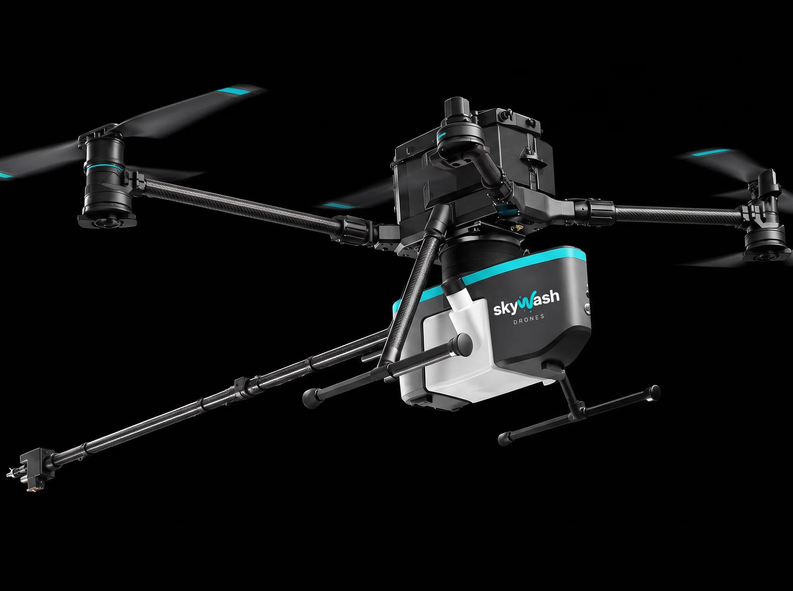
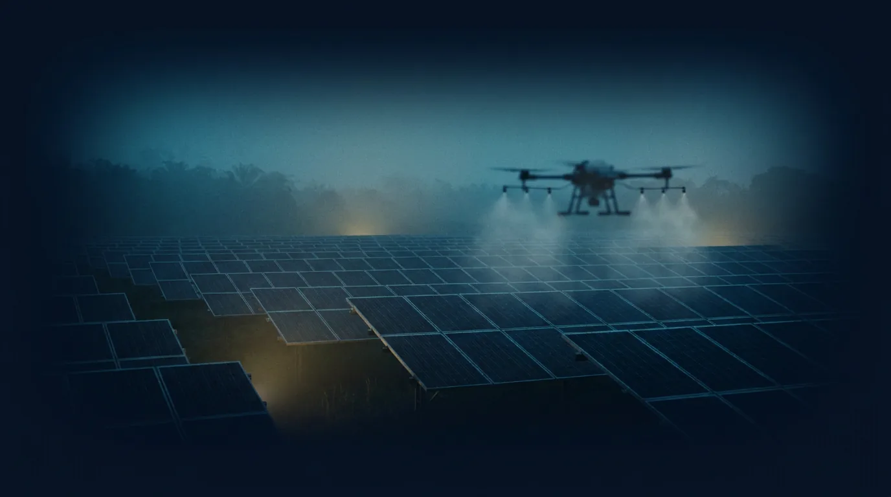

Vidro e pele de vidro
Fachadas envidraçadas de prédios comerciais com acabamento sem marcas.
Limpeza de fachadas, painéis solares e estruturas industriais com drone, em Belém e região.
A equipe fica no chão e o drone faz o trabalho no alto. Em muitos cenários, até 70% mais rápido que a limpeza manual.
Vistoria técnica.
Orçamento em até 24 horas.

Andaime, balancim e corda expõem gente ao risco e ocupam a calçada por dias. Com o drone, a limpeza acontece no alto enquanto a equipe acompanha tudo do solo.

O método de limpeza é definido depois da vistoria técnica, de acordo com o tipo de fachada, a vedação, a altura, o vento e a logística do local.
Fachadas envidraçadas de prédios comerciais com acabamento sem marcas.
Painéis de ACM e revestimentos metálicos em lojas, galpões e edifícios.
Limpeza e manutenção de sistemas fotovoltaicos, de telhados a usinas inteiras.
Estruturas altas em áreas industriais, sem montar andaime ao redor.
Fachadas de condomínios e edifícios, com área isolada durante a operação.
Colheitadeiras, ônibus, caminhões e equipamentos rurais.
A água comum deixa resíduo mineral e cria manchas, principalmente em vidro e superfícies lisas. Sem esses minerais, o vidro seca uniforme e com brilho de vitrine.
Para mofo, algas, fuligem, sujeira de pós-obra e encardido pesado, aplicamos produtos profissionais de forma controlada, só onde a água sozinha não resolve.
A agenda depende de janelas de vento e clima. O serviço está sujeito à avaliação técnica no local.
A vistoria leva cerca de 10 minutos no local. O orçamento chega em até 24 horas.